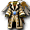
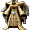

※各怪物的編輯請由標題的鉛筆圖示進行。掉落物品的編輯也可以從掉落物品欄的
帕爾塞斯
庫修隆
盧米納
莉希涅
歐費爾
蓋赫那
戴莫尼翁
１｜２｜３｜４｜５｜６｜７｜獎勵1｜獎勵2｜獎勵3
出現怪物
 ［天空米格爾］
［天空米格爾］
掉落備忘
 馬斯基普爾（紅） 馬斯基普爾（紅） | Lv | AC | MC | AAR | SAR | 掉落物品 |
| HP:73,000 | 110 | -50 | -10 | 30 | 35 | 斯坎達倫之信仰寶珠、斯坎達倫之寶珠(中)、 斯坎達倫結晶、帕爾塞斯之鎧甲寶珠、 斯坎達倫結晶、帕爾塞斯之鎧甲寶珠、 帕爾塞斯之板甲、 帕爾塞斯之板甲、 帕爾塞斯之女板甲、 帕爾塞斯之女板甲、 帕爾塞斯之緊身衣、 帕爾塞斯之女緊身衣、帕爾塞斯之羅戈斯、 帕爾塞斯之女緊身衣、帕爾塞斯之羅戈斯、 帕爾塞斯之女聖袍、 帕爾塞斯之女聖袍、 帕爾塞斯之女法衣、帕爾塞斯之蓋貝爾、 帕爾塞斯之女武服、帕爾塞斯之女守護甲、 帕爾塞斯之女武服、帕爾塞斯之女守護甲、 帕爾塞斯之女外袍、帕爾塞斯之精煉、 帕爾塞斯之女外袍、帕爾塞斯之精煉、 帕爾塞斯之卡夫坦、神聖之肉、 帕爾塞斯之卡夫坦、神聖之肉、 神聖之粉、善信仰5 神聖之粉、善信仰5 |
| 善惡值 | 信仰值 | 金錢 | 攻擊屬性 | 防禦屬性 | ||
| 16 | 16 | 695 | 隨機 | 隨機 | ||
| STR | DEX | INT | WIS | CON | ||
| 81 | 21 | 21 | 21 | 81 |
備註：
| 天空米格爾（藍） | Lv | AC | MC | AAR | SAR | 掉落物品 |
| HP:60,000 | 110 | -50 | -5 | 30 | 40 | 斯坎達倫之信仰寶珠、斯坎達倫之寶珠(中)、斯坎達倫結晶、帕爾塞斯之鎧甲寶珠、帕爾塞斯之板甲、帕爾塞斯之女板甲、帕爾塞斯之女緊身衣、帕爾塞斯之羅戈斯、帕爾塞斯之女聖袍、 帕爾塞斯之法衣、帕爾塞斯之女法衣、帕爾塞斯之蓋貝爾、帕爾塞斯之女武服、帕爾塞斯之女外袍、帕爾塞斯之女守護甲、帕爾塞斯之拉皮內斯、技能回復液2、魔力回復液2、 帕爾塞斯之法衣、帕爾塞斯之女法衣、帕爾塞斯之蓋貝爾、帕爾塞斯之女武服、帕爾塞斯之女外袍、帕爾塞斯之女守護甲、帕爾塞斯之拉皮內斯、技能回復液2、魔力回復液2、 [1次]頭盔2階段升級捲軸、[1次]戒指2階段升級捲軸、[1次]鎧甲2階段升級捲軸、[1次]護脛2階段升級捲軸、神聖之血、善信仰6 [1次]頭盔2階段升級捲軸、[1次]戒指2階段升級捲軸、[1次]鎧甲2階段升級捲軸、[1次]護脛2階段升級捲軸、神聖之血、善信仰6 |
| 善惡值 | 信仰值 | 金錢 | 攻擊屬性 | 防禦屬性 | ||
| 26 | 26 | 7444～7816 | 隨機 | 隨機 | ||
| STR | DEX | INT | WIS | CON | ||
| 81 | 21 | 21 | 21 | 81 |
備註：守護鎖定
［天空米格爾］
| ［天空米格爾］ | Lv | AC | MC | AAR | SAR | 掉落物品 |
| HP:90,000 | 110 | -80 | 0 | 30 | 40 | 斯坎達倫之信仰寶珠、斯坎達倫之寶珠(中)、斯坎達倫結晶、帕爾塞斯之鎧甲寶珠、帕爾塞斯之女板甲、帕爾塞斯之緊身衣、帕爾塞斯之羅戈斯、帕爾塞斯之女緊身衣、帕爾塞斯之蓋貝爾、帕爾塞斯之女武服、帕爾塞斯之法衣、 帕爾塞斯之守護甲、 帕爾塞斯之守護甲、 衝鋒突擊、阿扎爾西斯、 衝鋒突擊、阿扎爾西斯、 神聖光束、武器破壞、智慧炸彈、 神聖光束、武器破壞、智慧炸彈、 魔力回復液製法、技能回復液製法、善信仰7 魔力回復液製法、技能回復液製法、善信仰7 |
| 善惡值 | 信仰值 | 金錢 | 攻擊屬性 | 防禦屬性 | ||
| 50 | 50 | 830～？ | 隨機 | 隨機 | ||
| STR | DEX | INT | WIS | CON | ||
| 81 | 21 | 21 | 21 | 81 |
備註：米格爾大小、守護鎖定
掉落備忘